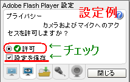

Now Loading...
ユーザ情報
ファイル転送
Youtube
Media
オプション
ニックネーム
状態
メッセージ
映像通話
映像通話開始
アバター
ファイル転送
ファイル名
サイズ
送信者
送信日時
ダウンロード
マルチメディア
Youtube以外の動画や、ゲーム・画像などはここで確認できます。
オプション
デスクトップ通知
デスクトップ通知を利用する
カメラ・マイクの許可
FlashPlayerがインストールされていないか、古すぎます。
こちらから、Adobe Flash playerを入手してください

マイクの設定
録音デバイス
感度 ：
ブースト ：
カメラの設定
録画デバイス
System
[
]
:
[
]
:
ニックネームとグループ名を入力してください
ニックネーム:
グループ:
を転送しますか？
FlashPlayerがインストールされていないか、古すぎます。
こちらから、Adobe Flash playerを入手してください
 ユーザ情報
ユーザ情報 オプション
オプション
 System
System